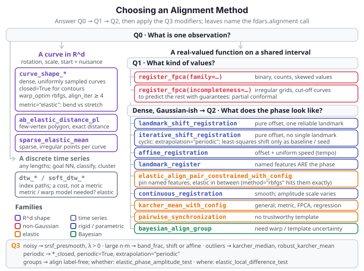
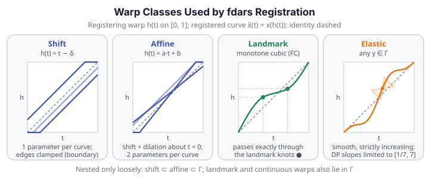

Choosing an Alignment Method¶
fdars.alignment offers more than a dozen ways to register curves, from one shift per curve to a full posterior over warping functions. They are not interchangeable: each assumes a particular kind of phase variability, and each pays for flexibility with variance, cost or interpretability. This page is the map. It asks a few questions about your data, points to the method whose assumptions match, explains why, and lists the traps.

Two questions first¶
Every registration method splits the variability of a sample into two parts:
- Amplitude: how tall or deep the features are.
- Phase: when the features happen, encoded by a warping function \(h_i\) per curve.
Write the registered curve as \(\tilde x_i(t) = x_i(h_i(t))\). Methods differ in which set the warps \(h_i\) may come from and what criterion picks them. So before choosing, answer:
- What does one observation look like? A real-valued function on a shared interval, a curve in \(\mathbb{R}^d\) whose rotation and size are irrelevant, or a discrete time series that you only want to compare, not model?
- What does the phase variability look like? A constant delay, a delay plus a change of tempo, a few identifiable events, or a smooth but otherwise arbitrary time distortion?
The answer to the second question is a warp class. The smaller the class that still contains the true warps, the better: a flexible method fitted to data whose phase is really a shift will "explain" some amplitude noise as phase (over-registration).

The classes are nested only loosely: shift ⊂ affine ⊂ \(\Gamma\) (all increasing diffeomorphisms of the interval), and landmark (monotone cubic) and continuous (Ramsay–Li \(\int \exp W\)) warps are smooth subsets of \(\Gamma\). The elastic dynamic program searches a discretised \(\Gamma\) whose local slopes are limited to \([1/7, 7]\) by default.
The decision tree in words¶
Q0. What is one observation?
- A curve in \(\mathbb{R}^d\) (an outline, a trajectory, handwriting), where rotation, scale or starting point are nuisance: use the shape-space functions
curve_shape_*(withclosed=Truefor contours, andwarp_optim={"method": "rbfgs"}withalign_iter >= 4for an accurate reparametrisation). When bending and stretching should cost differently, passmetric="elastic"with weightsa,b(planar curves). For small polygons where an exact distance matters,ab_elastic_distance_pl. For a few irregularly placed points per curve,sparse_elastic_align_pair/sparse_elastic_mean. See Shapes of Curves in R^d and Sparse & Irregular Curves. - A discrete time series (possibly of different lengths) where the goal is nearest-neighbour search, classification or clustering, not a warp model: the DTW family (
dtw_*,soft_dtw_*, the elastic time-series distances infdars.metric). DTW returns a cost, not a metric, and it warps amplitude differences away; see Dynamic Time Warping. - A real-valued function on a common interval: go to Q1.
Q1. What kind of values?
- Binary, counts or positive-skewed (on/off activity, spike counts):
register_fpca(family="binomial" | "poisson" | "gamma")registers on the likelihood scale and estimates a generalised FPCA jointly (Non-Gaussian Registration). - Irregular grids or curves cut off at the start or end:
register_fpca(incompleteness=...); to predict the unobserved rest with finite-sample guarantees, the partial-curve conformal tools infdars.conformal. - Dense, roughly Gaussian, shared grid: go to Q2.
Q2. What does the phase look like?
| Phase variability | Method | Page |
|---|---|---|
| Pure time offset, one reliable marker | landmark_shift_registration |
Shift |
| Pure time offset, no single marker | iterative_shift_registration (extrapolation="periodic" for cyclic data); least_squares_shift_registration only as a baseline or seed |
Shift |
| Offset plus a uniform change of speed (tempo) | affine_registration(warp_class="dilation" \| "affine") |
Affine |
| Named features with known correspondence, and the features are the phase | landmark_register |
Landmark |
| Features must be pinned, but the timing between them is free | elastic_align_pair_constrained_with_config(method="rbfgs") |
Landmark |
| Smooth non-linear phase, classical FDA workflow, amplitude scale varies between curves | continuous_registration (periodic=True for cyclic data, r_defaults=True for R parity) |
Continuous |
| General non-linear phase; you need a metric, an amplitude/phase split, elastic FPCA or regression | karcher_mean_with_config (DP by default; method="rbfgs" with a penalty for smooth warps) |
Elastic, Optimisers |
| Noisy curves or no trustworthy template; simple, low-dimensional phase | pairwise_synchronization (Tang–Müller) |
Pairwise Synchronisation |
| You must report uncertainty in the warps or the template | bayesian_align_group (sampler="infhmc", several chains) |
Bayesian Alignment |
Q3. Modifiers, whatever Q2 chose:
- Noisy curves. Pre-smooth before any SRSF or derivative-based method (
srsf_presmooth), and use \(\lambda > 0\). - Large \(n \cdot m\). A band (
band_frac), the coarse-to-fine Karcher mean (automatic for \(m > 50\)), a coarse DP for long pairs (elastic_align_pair_multireswithn_refine_steps=0), or a cheaper warp class. - Outliers.
karcher_median,robust_karcher_mean; flag them withelastic_outlier_detection. - Periodic or closed data.
karcher_mean_closed/elastic_align_pair_closed(elastic),periodic=True(continuous),extrapolation="periodic"(shift). - Groups to compare. Align all curves together without labels, then test whether the groups differ in amplitude or phase with
elastic_phase_amplitude_test, or where and in which direction withelastic_local_difference_test(Inference after Alignment).
Comparison table¶
| Method | Warp class | Criterion | Invariant to | Template | Cost (one pass) | Uncertainty | Typical use |
|---|---|---|---|---|---|---|---|
least_squares_shift_registration |
\(t-\delta\) | \(L^2\) to the raw mean | time translation | fixed raw mean | \(O(n\,m\log m)\) per golden-section step | — | quick baseline, seed |
iterative_shift_registration |
\(t-\delta\) | REGSSE, Newton steps | time translation | re-estimated (or fixed / custom) | \(O(\text{iter}\cdot n\,m)\) | — | latency, onset; cyclic data |
landmark_shift_registration |
\(t-\delta\) | closed form \(\tau - t_i\) | time translation | none | \(O(n\,m)\) | — | one reliable marker |
affine_registration |
\(a t + b\) | \(L^2\) / normalised \(L^2\) / Pearson | shift and dilation (Pearson: also amplitude scale) | re-estimated, centred | grid \(G^2\) + Nelder–Mead per curve and iteration | — | tempo plus offset |
landmark_register |
monotone cubic | interpolates the landmarks | — | none (target positions) | \(O(n\,m)\) | — | interpretable features |
elastic_align_pair_constrained_with_config |
elastic between pinned points | SRSF \(L^2 + \lambda P\) | reparametrisation between landmarks | pairwise | one DP (+ RBFGS per segment) | — | pinned features, free in between |
continuous_registration |
smooth \(\int\exp W\) | min-eigenvalue (scale-free) or LS, + roughness | amplitude scale (min-eigenvalue) | given or mean, optional passes | \(O(\text{iter}\cdot n_{\text{fine}} K^2)\) per curve | — | classical FDA; periodic |
karcher_mean_with_config, DP |
\(\Gamma\), slopes \([1/7,7]\) | Fisher–Rao (SRSF \(L^2\)) \(+\lambda P\) | reparametrisation, vertical offset | Karcher mean, centred | \(O(\text{iter}\cdot n\, m^2 \cdot 35)\) | warp_statistics (pointwise) |
default; elastic FPCA, regression |
same, nbhd_dim=10, dp_cost="piecewise_linear" (DP2) |
finer \(\Gamma\) | same | same | same | ≈ 2–5 × DP | — | lower residual floor, fdasrsf parity |
same, method="rbfgs" |
smooth \(\Gamma\) | same + roughness / geodesic penalties | same | same | local optimiser seeded by DP | — | smooth warps, exact landmarks |
same, band_frac>0 |
\(\Gamma\) ∩ band | same | same | same | \(O(\text{iter}\cdot n\, m R \cdot 35)\) | — | long curves, small phase |
karcher_mean_closed |
\(\Gamma\) + start-point shift | SRSF \(L^2\) | + starting point | Karcher | about \((20 + m/10)\) × DP | — | periodic 1-D signals |
curve_shape_* |
\(\Gamma\) × rotation × scale (× start point) | arccos on the pre-shape sphere, or \(L^2\) | translation, scale, rotation, reparametrisation, start point | Karcher mean or median | align_iter × seeds × DP per pair |
bootstrap or model-based region, box plot | outlines, trajectories in \(\mathbb{R}^d\) |
same, metric="elastic" |
as above, planar | \((a,b)\) elastic metric via the F-transform | as above | as above | as above | as above | bending vs stretching weighted |
ab_elastic_distance_pl |
monotone matchings | exact \((a,b)\) distance of polygons | translation, reparametrisation | — | \(O(N_1^2N_2^2(N_1+N_2))\) | — | small polygons, ground truth |
sparse_elastic_* |
closure of \(\Gamma\) | polygon-SRV \(L^2\) | translation, reparametrisation | spline SRV mean | per curve ∝ points | — | sparse, irregular curves |
register_fpca |
monotone B-spline or two-knot inverse warp | exponential-family likelihood + GFPCA | — | subject-specific GFPCA fit | L-BFGS per curve + GFPCA per round | — | binary, count, incomplete curves |
pairwise_synchronization |
piecewise linear | penalised pairwise \(L^2\) | — | none | \(O(n^2)\) pairwise fits | — | noisy samples, template-free |
bayesian_align_group |
Fourier tangent warps | posterior | reparametrisation | sampled | MCMC | full posterior, \(\hat R\), ESS | warp UQ |
| DTW family | discrete index paths | accumulated cost (no root) | index warping | none | \(O(m^2)\) per pair | — | time-series search, classification |
Recommendations, with reasons¶
- Default for dense 1-D functional data: the elastic Karcher mean with DP and \(\lambda = 0\), then check the diagnostics. It is the only family with a proper amplitude metric (Fisher–Rao, invariant to simultaneous reparametrisation), it separates amplitude from phase, and its output feeds
vert_fpca,horiz_fpca,joint_fpca, elastic regression and the PERMANOVA test. - Switch to
method="rbfgs"withpenalty="l2gam"and \(\lambda > 0\) (orpenalty="roughness") when the warps look jagged or pinch, or when landmarks must be hit exactly. DP slopes are quantised and leave a residual floor (about 0.02 in SRSF distance for exactly warped copies); RBFGS is local, but it is seeded by DP and, when penalised, also restarted from the identity. See Elastic Optimisers. - If the phase is a shift, use a shift model. An elastic warp has hundreds of degrees of freedom and will absorb amplitude noise as phase; the bake-off below shows the elastic warp error is about three times the shift model's on pure-shift data. Iterative shift is interpretable and costs \(O(n\,m)\) per iteration. Centre the shifts yourself afterwards: the iterative method does not.
- Continuous registration is the right tool when amplitude scale legitimately varies. Its default min-eigenvalue criterion is zero whenever the registered curve is proportional to the target, so it does not warp to fix amplitude, where least-squares and elastic criteria would. Use
r_defaults=Truefor results comparable to Rregister.fd; use the default six-basis \(W\) only with \(\lambda > 0\) (unpenalised, it overfits). - Landmarks first when they exist and are unambiguous. The warp is interpretable ("age at peak growth velocity"). Detection matches by order, so one spurious peak shifts every pairing after it: always check the detection counts per curve.
- Never compute SRSFs of noisy raw data. The SRSF differentiates the curve. Pre-smooth with
srsf_presmooth(..., smoothing="box", passes=25)orsmoothing="spline"; the aligners do not smooth for you. - For \(\mathbb{R}^d\) outlines use
curve_shape_*, not the*_nd_with_configfunctions. The_ndaligners share one warp across coordinates but have no rotation or scale quotient, and they normalise each coordinate on its own. - For binary or count curves,
register_fpcabeats aligninglogit(p̂)or \(\sqrt{\text{counts}}\): it registers on the likelihood scale. Preferfpca_type="two_step"for Gamma and Poisson data, because the variational EM treats them as Gaussian. - For warp uncertainty, use
bayesian_align_group(sampler="infhmc", n_chains>=4)and read \(\hat R\) and the ESS; add tempering (n_temperatures>1) if the multimodality flags fire. Do not trust single pCN chains without diagnostics. - When comparing groups, align all curves together without the labels, then run
elastic_phase_amplitude_test(amplitude_metric="pairwise")for a global answer, orelastic_local_difference_testto find the time intervals where amplitude or timing differ. Per-group templates break the validity of the permutation test, and noisy curves should be pre-smoothed lightly, or SRSF noise leaks phase differences into the amplitude test (Inference after Alignment).
Same data, five methods¶
The claims above can be checked. The block below simulates three samples of 20 noisy two-bump curves whose true phase is, respectively, a pure shift, an affine warp, and a smooth non-linear warp \(w(t) = t + c\,t(1-t)\). Each curve also carries ±10 % amplitude scaling and white noise. Five methods register each sample, and the table reports the mean absolute error between the estimated and the true registering warp (on the interior \([0.15, 0.85]\), after removing the common template warp that no method can identify). A * marks the best method per column.
import numpy as np
from fdars import alignment as A
rng = np.random.default_rng(0)
n, m = 20, 101
t = np.linspace(0, 1, m)
mu = lambda s: np.exp(-(s - 0.35) ** 2 / 0.008) + 0.7 * np.exp(-(s - 0.68) ** 2 / 0.01)
def simulate(kind):
"""x_i(t) = a_i * mu(w_i(t)) + noise; returns the data and the registering warps w_i^-1."""
X, H = [], []
for _ in range(n):
if kind == "shift":
w = t - rng.uniform(-0.06, 0.06)
elif kind == "affine":
w = rng.uniform(0.9, 1.1) * t + rng.uniform(-0.05, 0.05)
else: # smooth non-linear
w = t + rng.uniform(-0.6, 0.6) * t * (1 - t)
X.append(rng.uniform(0.9, 1.1) * mu(w) + 0.02 * rng.standard_normal(m))
H.append(np.interp(t, w, t))
return np.array(X), np.array(H)
def warp_error(Hhat, H):
"""Mean |h_hat - h| on [0.15, 0.85] after removing the common (template) warp."""
inner = (t > 0.15) & (t < 0.85)
d = (Hhat - Hhat.mean(0)) - (H - H.mean(0))
return np.abs(d[:, inner]).mean()
def methods(X):
# registered curve x(h(t)); each method's warp converted to h
seed = A.least_squares_shift_registration(X, t, 0.15)["shifts"]
r = A.iterative_shift_registration(X, t, initial=seed, max_iter=20, tol=1e-6)
yield "iterative shift", t - r["shifts"][:, None]
r = A.affine_registration(X, t)
yield "affine", (t - r["shifts"][:, None]) / r["dilations"][:, None]
r = A.landmark_detect_and_register(X, t, kind="peak", min_prominence=0.2, expected_count=2)
yield "landmark", r["gammas"]
r = A.continuous_registration(X, t, lambda_=1e-3, max_template_iter=5)
yield "continuous", r["warps"]
yield "elastic (DP)", A.karcher_mean(X, t)["gammas"]
rows = {}
for kind in ["shift", "affine", "smooth"]:
X, H = simulate(kind)
for name, Hhat in methods(X):
rows.setdefault(name, {})[kind] = warp_error(np.asarray(Hhat), H)
print("mean |warp error| x 1000 true warp: shift affine smooth")
for name, r in rows.items():
best = lambda k: "*" if r[k] == min(v[k] for v in rows.values()) else " "
print(f" {name:16s} " + "".join(f"{1000 * r[k]:8.2f}{best(k)}" for k in ["shift", "affine", "smooth"]))
print("FDARS_FENCE_OK")
mean |warp error| x 1000 true warp: shift affine smooth
iterative shift 1.43 9.21 40.62
affine 1.28* 1.30* 7.03
landmark 6.69 8.76 7.80
continuous 3.12 6.26 4.79*
elastic (DP) 4.26 4.26 4.95
FDARS_FENCE_OK
How to read it:
- Shift data. The rigid models (iterative shift, affine) recover the warps to about \(1.3\)–\(1.4 \times 10^{-3}\). The elastic DP is roughly three times worse: with hundreds of free warp values it fits part of the noise and the amplitude scaling as phase. Affine edges out pure shift here only because it re-centres its warps every iteration.
- Affine data. The shift model can no longer follow the tempo change (error ×7); affine, the matching model, stays at \(1.3 \times 10^{-3}\).
- Smooth non-linear data. Shift and affine are now misspecified. The penalised continuous registration and the elastic Karcher mean, whose warp classes contain \(t + c\,t(1-t)\), do best. Landmark registration is competitive throughout because the two peaks are the phase here, but it uses only two points per curve, so it cannot beat a model that uses the whole curve.
The lesson is the rule of thumb behind the decision tree: pick the smallest warp class that contains the phase you believe in. The extra flexibility of elastic alignment is a cost when it is not needed, and a necessity when it is.
Pitfalls¶
Common ways to get alignment wrong
Template and warp behaviour
- Pinching and over-registration. At \(\lambda = 0\) the elastic DP can compress a whole region down to slope \(1/7\), and SRSF alignment can explain amplitude differences as phase. Remedies: \(\lambda > 0\), a band,
method="rbfgs"withpenalty="roughness", or a smaller warp class. - \(\lambda\) is not portable. The same number means a different strength on different grids and under DP vs RBFGS. Use
lambda_scaleto convert between optimisers;lambda_cvtends to pick the smallest candidate. - Templates drift. Iterative shift and continuous registration do not centre their warps, so the registered sample can sit early or late as a whole. Affine registration and the elastic Karcher mean centre them.
- Boundaries. Shift and affine registration fill the uncovered edge by clamping (
extrapolation="boundary"), so flat edges enter the criterion. Userestrict_domain=True,domain="overlap"orextrapolation="periodic"where appropriate. convergedis about the optimiser, not the warps. Incontinuous_registrationit means the tolerance was met (terminationsays why a curve stopped otherwise:"stalled","coef_limit"or"max_iter"); in the Karcher mean,converged=Falseis reported, not raised. Inspect the criterion and the warps as well.
Distances and metrics
- Elastic distance is only approximately symmetric.
elastic_distance(f1, f2)warpsf2ontof1, and the DP is a one-sided discretisation. On coarse grids the asymmetry can be large (a one-bump vs a two-bump curve: 0.56 vs 0.94 at \(m = 30\), 0.92 vs 0.94 at \(m = 301\)). Use fine grids, or symmetrise with \(\tfrac12(d_{12} + d_{21})\). The distance-matrix functions compute the upper triangle and mirror it. - DTW costs are not metrics, and fdars DTW costs are not rooted: tslearn's value is the square root of fdars' for \(p = 2\).
- SRSFs ignore vertical offsets. Curves that differ only by \(+c\) have elastic distance 0.
Method-specific traps
- Landmark detection matches by order and
landmark_detect_and_registerraises if any curve has fewer thanexpected_countfeatures;landmark_registerdoes not raise on inconsistent input (for example, fewer landmark lists than curves) but returns identity warps and the curves unchanged. - The closed-curve start-point search is heuristic (coarse, then fine).
elastic_partial_matchdistances are not comparable across window lengths.elastic_depthis not a lens depth: it is \(1/(1 + \text{mean distance})\), separately for amplitude and phase, which live on different scales.
Warp conventions at a glance¶
All pages show warps as registering warps, \(\tilde x_i(t) = x_i(h_i(t))\). The functions return them in their own conventions:
| Family | What is returned | Registered curve |
|---|---|---|
least_squares_shift_registration, iterative_shift_registration, landmark_shift_registration |
shifts \(\delta_i\) |
\(x_i(t - \delta_i)\); \(\delta > 0\) moves the curve right (opposite sign to scikit-fda's deltas_) |
affine_registration |
dilations \(a_i\), shifts \(b_i\) |
\(x_i((t - b_i)/a_i)\); dilation is about \(t = 0\) |
landmark_register |
gammas, mapping target time to source time |
\(x_i(\gamma_i(t))\) |
continuous_registration |
warps \(h_i\) |
\(x_i(h_i(t))\) |
elastic (karcher_mean*, elastic_align_pair*) |
gammas |
\(x_i(\gamma_i(t))\); elastic_align_pair(f1, f2) warps f2 onto f1 |
register_fpca |
t_hat, the inverse warp \(h_i^{-1}\) at each observation |
plot \(Y_{ij}\) against \(\hat t_{ij}\); see Non-Gaussian Registration |
pairwise_synchronization |
warps and inverse_warps |
built from the inverse of the averaged pairwise warps |
See also¶
- Shift Registration, Affine Registration, Landmark Registration, Continuous Registration — the rigid and parametric families.
- Elastic Alignment, Elastic Optimisers & Penalties, Advanced Elastic Alignment, TSRVF, Shape Analysis (1-D) — the Fisher–Rao family.
- Shapes of Curves in R^d, Sparse & Irregular Curves, Non-Gaussian Registration — special kinds of data.
- Pairwise Synchronisation, Bayesian Alignment — template-free and probabilistic alignment.
- Dynamic Time Warping — DTW as an alignment, and when not to use it.
- Inference after Alignment — tests, box plots, outliers and conformal sets on aligned data.
- Comparing Methods — eight aligners on one sample with known warps, and on the growth data.
- Distance Metrics — DTW and other curve distances.
References¶
- Ramsay, J.O., Silverman, B.W. (2005). Functional Data Analysis, 2nd ed., ch. 7–8. Springer.
- Marron, J.S., Ramsay, J.O., Sangalli, L.M., Srivastava, A. (2015). Functional data analysis of amplitude and phase variation. Statistical Science 30(4):468–484.
- Srivastava, A., Klassen, E. (2016). Functional and Shape Data Analysis. Springer.